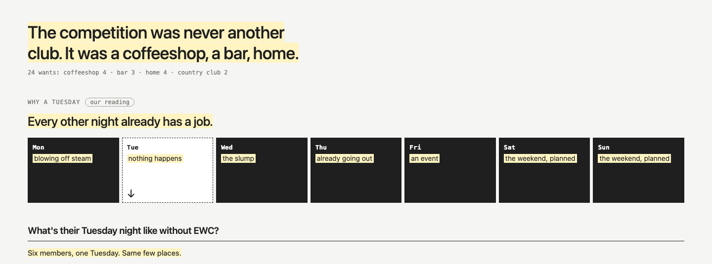
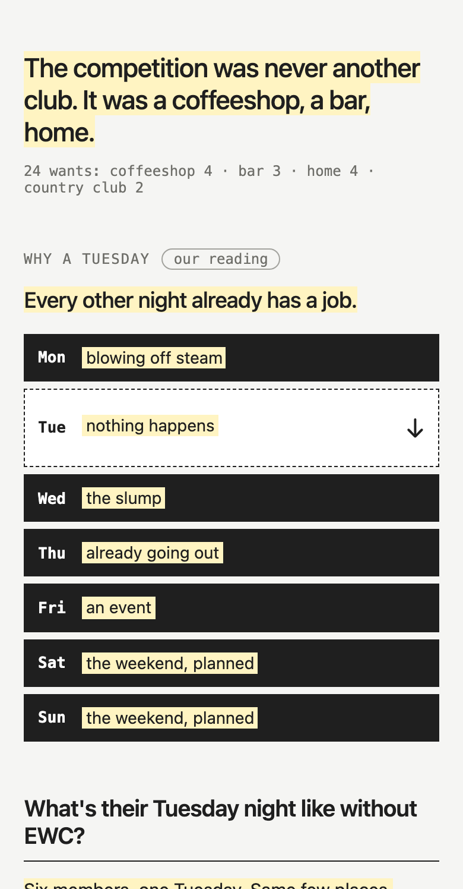
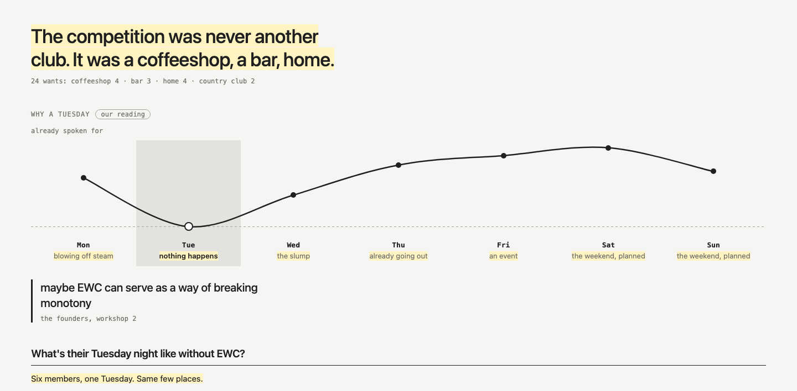
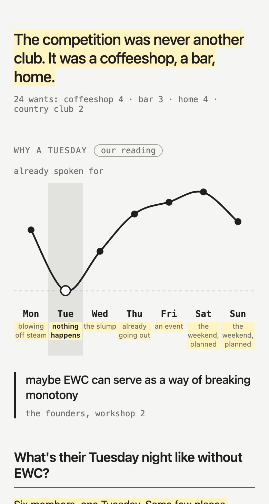
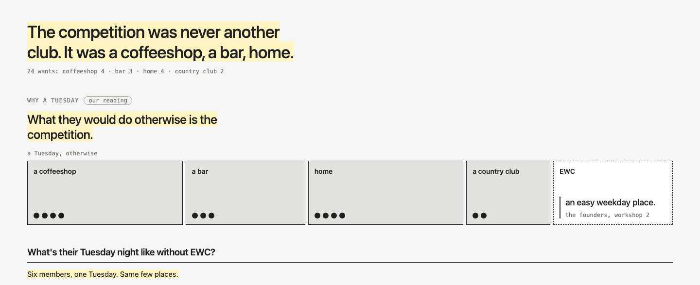
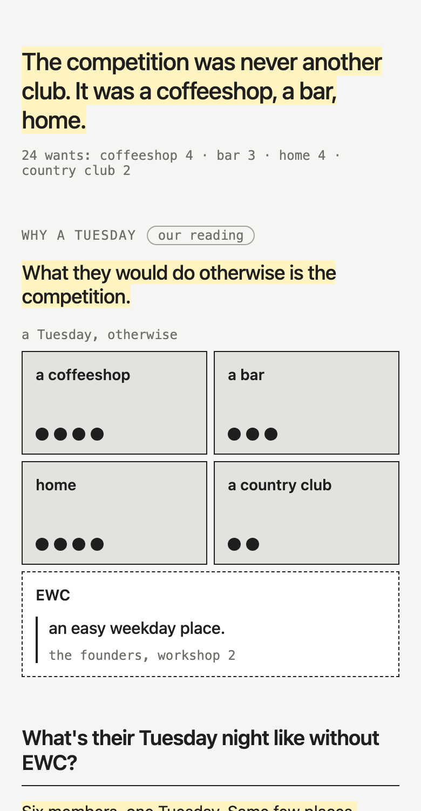
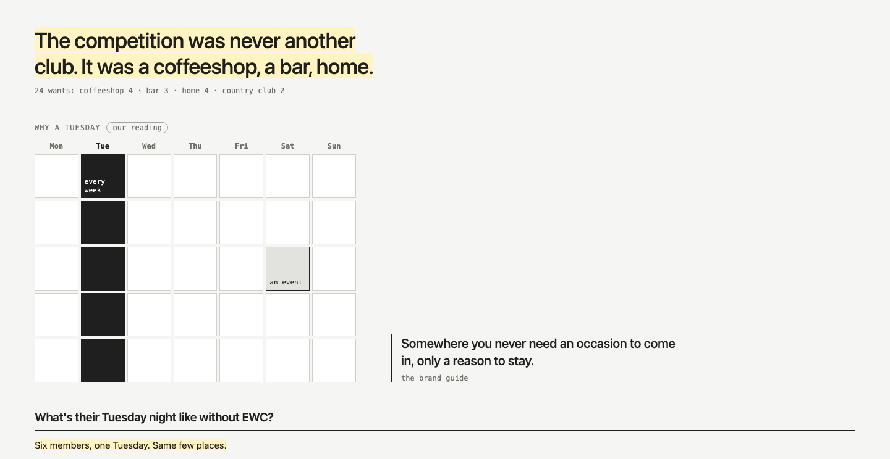
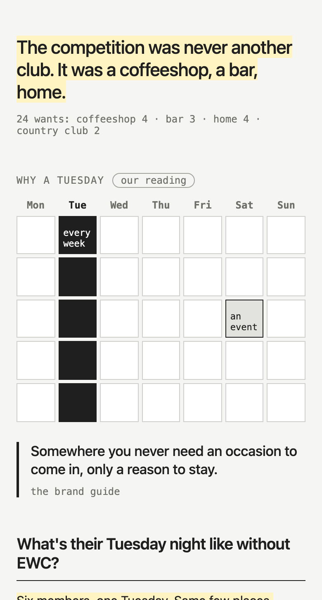

Study 83 · 6 November 2026 · Kahran
EWC, why a Tuesday
Study 50's page as it was, plus one piece above the six Tuesdays: why it is a Tuesday, four ways. Every other night already has a job; Tuesday is the one nothing claims, so what fills it is the competition. The week is our reading, marked; the quotes are the founders' and the guide's.
"The words are trying to carry too much, the visuals need to carry more."
Kahran, 6 Nov.







Every string has a data-copy id in copy.json; ours are in words.json, then build.cjs.